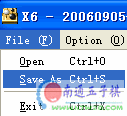
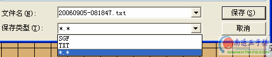

1、进入页面：http://www.ntwzq.com/Connect6.htm
2、根据不同的棋谱格式选择对应的format，然后点击打谱
3、出现棋谱，最下方有个复制按钮，点击
4、到论坛里面来，准备发表了，发表之前选择“设计、代码、预览”三个按钮中的“代码”〔注意：默认是设计〕，接着在发帖窗口粘贴刚才复制的内容。
5、点击发表或者回复提交内容，就ok了。
运行X6软件，打谱之后，选择save as命令，如下图：

保存时选择的格式为*.*，默认的文件名后面请手工增加".txt"，如下图：

保存后的文件如下图所示：
双击打开，复制其中所有内容，到棋谱转换页面中〔http://www.ntwzq.com/Connect6.htm〕，选择x6 format
点击打谱就可以了。